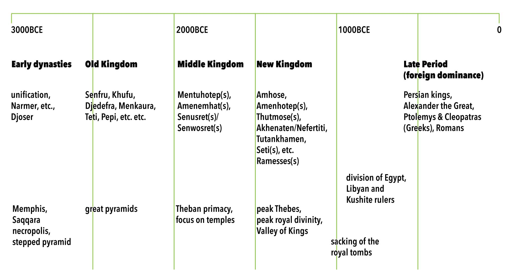

Everyone is hopefully arriving Friday, March 17, or earlier. Most are staying at the Four Seasons Nile Plaza, a few are staying next door at the Kempinski Nile Hotel. All group activities will originate at the Four Seasons.
Tentative group tourism schedule:
Friday, March 17
Saturday, March 18
Sunday, March 19
Monday, March 20
Tuesday, March 21
Nights of Wednesday, March 22 and Thursday, March 23, we’re at the Old Cataract Hotel. (If you’re wondering what a cataract is, here’s an explanation.)
We’re booked on the Sanctuary Sun Boat III from Friday, March 24–Tuesday, March 28.
On this map, North is down, as is the flow of the river, as is the direction of trip. Various points of interest are called out on the map, although it’s not yet clear which ones we will visit, or on which days. The itinerary is largely determined by the cruise operator, and they supply a sample itinerary here.
Martin found these books useful:
(This is Martin’s attempt to reduce 3,000 years of history to a most basic framework for the sake of memory.) By coincidence, the four major dynastic eras of ancient egypt almost fit into neat 500 year chunks, with 100 years (give or take) of instability and strife at the end of each.
• • •